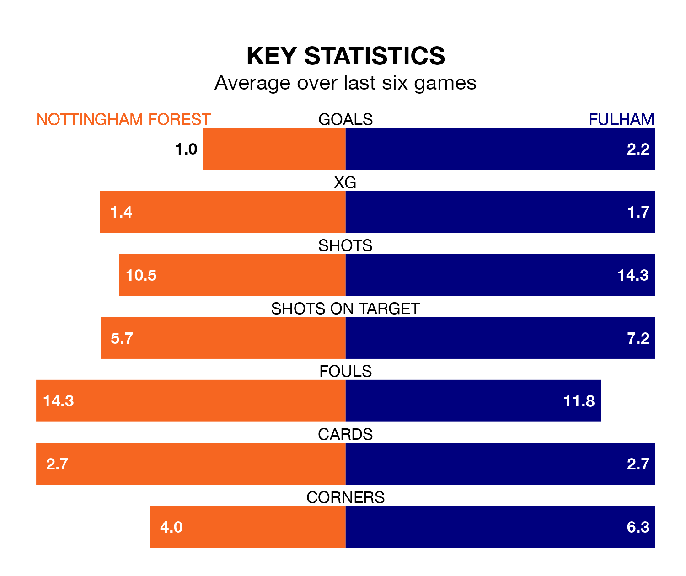

Nottingham Forest face Fulham at the City Ground on late Tuesday looking to secure a first win in six Premier League games.
The Tricky Trees have lost three and drawn two matches since they last earned three points – against West Ham United on February 17.
They face a Fulham side who have won three and drawn one over that time.
With Bernd Leno between the sticks, Fulham can rely on one of the league's safest pair of hands. He has kept eight clean sheets in his 30 appearances this season, and only one other 'keeper – Arsenal's David Raya – has been able to prevent the opposition scoring on more occasions in the Premier League.
In Forest's net, Matt Turner has two clean sheets in 17 games. He has conceded a goal every 59 minutes, 10% more often than the 64 minutes between goals for Leno.
In the last 10 years, Forest and Fulham have played each other on 15 occasions. Forest won five of them, Fulham nine, and they drew once.
On average, the Tricky Trees scored 1.5 goals and the Cottagers 2.1 in those matches.
Their last meeting was on December 6, when Fulham won 5-0 at home.
The Tricky Trees are 17th in the table after 30 games, of which they have won six and drawn eight, earning 26 points.
The Cottagers are five places ahead of the home side in 12th, with 11 wins and six draws putting them on 39 points.
With 36 goals in 30 games so far this season, Forest are scoring at below the league average rate with 1.2 goals per game. And they are conceding more than average, letting in 52 goals at a rate of 1.7 per game.
The visitors are also below average scorers, with 1.5 goals per game, compared to a league average of 1.6. They have conceded 1.6 goals per game.
Forest's last match was on Saturday, a 1-1 draw against Crystal Palace, with Chris Wood getting the goal for the Tricky Trees.
Fulham drew 3-3 with Sheffield United last time out, also on Saturday, with Bobby Decordova-Reid, João Palhinha and Rodrigo Muniz on the scoresheet.
Tuesday's match will be refereed by Michael Oliver, who has taken charge of 19 Premier League games so far this season, issuing four red cards and booking 79 players. He has awarded five penalties.
The last Forest game Oliver refereed was a 2-1 away loss to Arsenal on August 12. His last Fulham match was their 2-1 win away at Manchester United on February 24.
Updated: 10:31 (UTC), 31/03/24